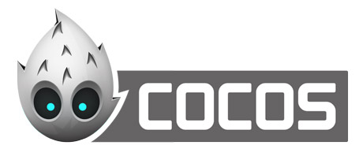
在游戏中，人物的各种动作是必不可少，一般实现人物动作的方式有两种，序列帧动画或骨骼动画。Cocos在更新到2.x版本之后，便没有了骨骼动画的功能，使得开发者非常困扰。终于在本次更新中，Cocos编辑器将骨骼动画添加了回来！（注：新版本骨骼动画需要Cocos2d-x3.8版本）
骨骼动画与序列帧动画
序列帧动画是将，动画的每一帧都是人物动作的一个快照，序列帧的帧数直接决定动画的流畅度和平滑效果，但是同时，序列帧的数量也严重影响着资源包体积及图片资源加载速度。而骨骼动画则是把人物拆开成碎块，然后将人物各个部分拼接到一起，并为其各部分图片绑定到一根根互相作用连接的"骨头"上，通过控制这些骨骼的位置、旋转方向和放大缩小便可以做出非常流畅细腻的动画。同时骨骼动画编辑方式和Flash非常相似，对于擅长使用Flash的动画编辑师来说上手非常容易。
新建骨骼动画
首先点击屏幕右上角的 文件->新建文件（快捷键：Command+N），打开如下界面，选择骨骼动画，点创建：
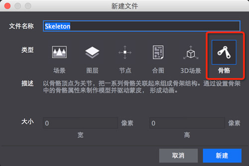
主界面介绍
首先我们需要了解一下编辑器界面中各个部分的功能，
我们常用的空间的位置已经不需要使用了
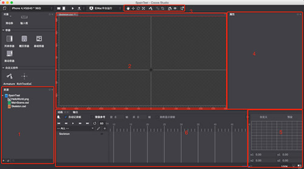
1.资源列表，这里显示你项目中所有资源，如果想编辑骨骼，首先需要将骨骼动画的图片导入进来。
2.渲染区域，也就是我们的画布。这里是资源布局的编辑区域，在这个区域可以各个图片和骨骼进行移动，缩放，旋转的操作，所有的图片、骨骼、动画的绑定与编辑都在这个区域完成
3.快捷菜单栏，快捷菜单栏中包涵一些常用操作，这里的每个按钮的用途会在下边介绍。
4.属性栏，当选中一个对象(图片/骨骼)时，属性栏会显示出该对象的所有属性。通过属性栏可以非常精准的修改对象的属性设置，并且立刻在渲染区域显示出来。
5.帧曲线设置面板，在这个面板中，可以设置动画的动画曲线。其中预设了一些效果，也可以自己通过修改曲线自定义效果，以修改动画的播放曲线（例如，挥剑动画，开始时候挥剑速度慢，然后逐渐变快，就可以通过这里轻松设置）。
6.动画列表，这个面板会显示出所有的对象，以及对象的关键帧。通过设置在关键帧中骨骼及图片的变化就可以编辑出流畅的骨骼动画了。
快捷栏介绍
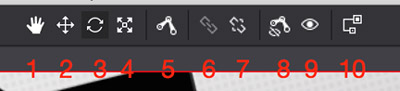
1.移动画布,永远移动渲染区域（画布）的显示位置
2.平移，用于移动对象的位置，修改对象Position。
3.旋转，对象进行旋转操作
4.缩放，对对象进行缩放操作
平移、旋转、缩放三个操作选中对象时候，会出现如下图形：
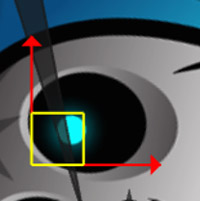
对于平移或缩放操作，两个箭头会分别修改x,y方向的位置或大小。点击中间方形区域，则可以同时修改x,y的位置或大小。
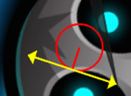
对于旋转操作，两个箭头则会逆时针/顺时针旋转对象。
5.创建骨骼，该工具可以快速连续创建骨骼，选中该工具后，在画布上进行点击鼠标左键，然后移动鼠标，选择合适的大小后，再次点击鼠标左键，则会创建一个骨骼，并且开启下一次的骨骼创建操作，点击鼠标右键，退出编辑状态。
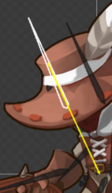
（指向渲染区域中心的坐标系表示该骨骼没有父骨骼）
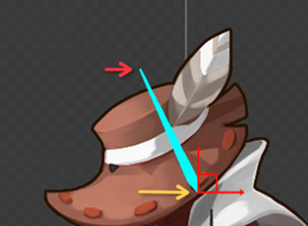
（黄色箭头指向点为骨骼的头端是旋转、缩放、位移的中心（锚点），红色箭头指向则是骨骼的尾端，旋转骨骼时候，点击骨骼尾端可以很方便的对骨骼进行准确的旋转）
6.绑定，绑定工具用于将骨骼和图片资源进行绑定，选中该工具后，点击要绑定的图片，会出现一个小箭头，再点击要绑定的骨骼即可将骨骼和图片进行绑定，绑定后的图片，会根据骨骼的旋转、移动、缩放等操作进行同步的改变。
同时，绑定工具亦可将骨骼与骨骼之间进行绑定，骨骼间绑定的方式与图片绑定方式类似：选中快捷菜单栏绑定工具，点击子骨骼a，移动鼠标会出现一个黄色的线，然后点击父骨骼b就可以了。将骨骼a绑定到骨骼b时，当骨骼b旋转、移动时，骨骼a相对于骨骼b的位置和旋转将不会改变。
（注：当勾选动画列表栏中的自动记录关键帧选项时，无法进行骨骼绑定操作）
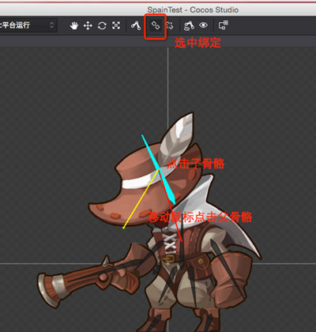
（骨骼与骨骼间的绑定）
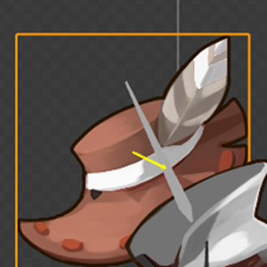
（图片与骨骼之间的绑定）
7.解绑，解除绑定操作，与第6个绑定相反。
8.隐藏/显示骨骼，可以切换骨骼对象的显示状态，关闭骨骼显示后，可以更好的查看各个图片。只针对图片进行操作，无需担心误修改骨骼对象。
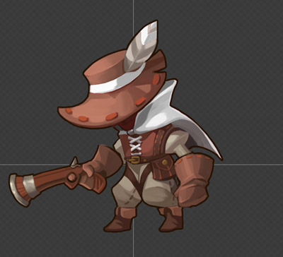
（隐藏骨骼状态）
9.隐藏/显示皮肤，与第8个功能类似，可以切换图片(皮肤)的显示状态，只针对骨骼对象进行操作，无需担心误修改图片。
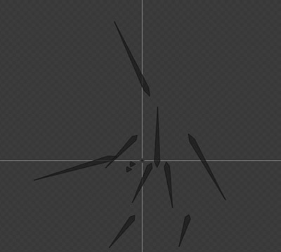
（隐藏皮肤状态）
10.查看骨骼关系，这个功能可以更好地对骨骼对象及图片进行绑定管理操作，通过列表形式清楚的展现出各个对象之间的绑定关系。
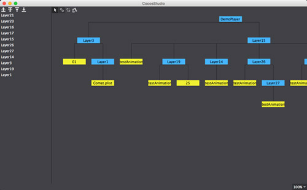
对编辑器的各个功能有了初步了解后，我们就可以开始编辑骨骼动画了。
编辑骨骼动画
1.首先在资源列表区域点击右键，选择 导入资源 ，也可以将资源直接拖拽进入资源列表（注意，这里不同动画之间的骨骼也尽量不要出现命名重复）
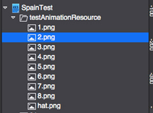
2.将资源列表中的图片拖拽到渲染区，并一一摆好位置
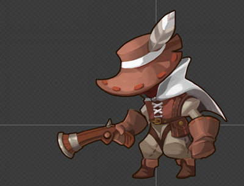
3.根据摆放好的图片，创建骨骼：选中快捷菜单栏中的创建骨骼按钮，在人物身体部位（图片）的轴心（旋转中心）上单击左键，将鼠标移动到旋转半径的另一头，再次点击左键，便可以创建出一个骨骼，然后点击鼠标右键，取消骨骼编辑。（重复以上操作直至创建好所有骨骼）
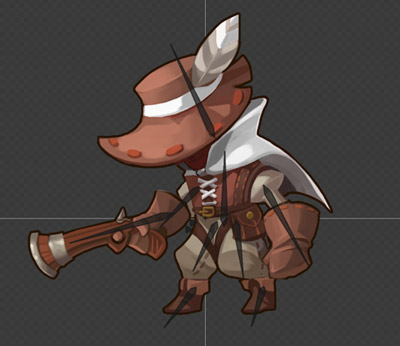
4.将人物身体各部分图片与骨骼绑定：点击快捷菜单栏中的绑定按钮，然后单击左键选择要绑定的图片，这时移动数遍会出现一个黄色的箭头，将鼠标移动到要绑定的骨骼上边，再次点击左键，便可将图片与骨骼绑定。这时，黄色箭头会变为红色箭头。（重复以上操作直至将所有图片与骨骼绑定完毕）
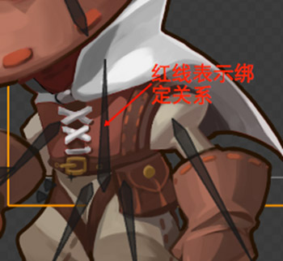
如果希望解除绑定，选择要解除绑定的骨骼，点击快捷菜单栏中的"解除"按钮即可。
5.创建骨骼的父子关系：本步骤操作是将骨骼与骨骼之间进行绑定，形成一种父子关系，当父骨骼产生位移或旋转时候，子骨骼也会跟随父骨骼变化。
操作步骤与绑定图片相似，首选点击快捷菜单栏的绑定按钮，然后左键单击要绑定的子骨骼，然后将鼠标移动到要绑定的父骨骼上，再次单击左键即可。
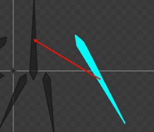
（骨骼间的父子绑定关系）
6.编辑动画，当所有的骨骼和图片之间的关系设置完毕后，就可以开始编辑骨骼动画了。
（1）先添加第一帧（初始位置的关键帧），先将0帧位置的所有对象都选中，然后右键选择 "添加帧"
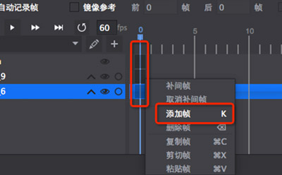
将初始位置添加关键帧后，为了让动画能够形成一个闭环，我们需要将动画的首尾状态设置的一致，全选所有对象的初始位置的关键帧，右键->复制，然后到动画最后一帧（例如1秒的动画，最后一帧默认为60帧），右键->粘贴。
（2）勾选自动记录关键帧的复选框，开始编辑其他帧，将时间轴拖动到到某一帧上(如10帧)，对人物骨骼的位置角度进行编辑，这时，编辑器将会自动记录一个关键帧，两个关键帧之间会自动进行补帧，以保证动画播放流畅。（补帧是不会显示出来的）
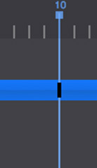
（3）编辑完动画后，需要对动画进行分组，以方便后边播放，点击动画栏中的小加号，输入一个动画名称，然后选择动画在时间轴的帧数范围即可
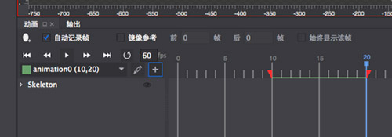
（4）将动画编辑好后，点击三角按钮可以进行播放，查看动画效果
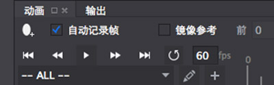
（图中60fps表示每秒包涵多少帧，帧数越高动画越细腻，一般保持与屏幕刷新帧数相同即可（默认60帧）即可）
（5）为骨骼动画添加帧事件：帧事件的意思是在骨骼动画播放到某帧的时候，会产生一个事件，程序可以对事件进行监听，当收到事件时候，进行不同的动作，例如播放另外一个动画，开枪，或者播放技能效果等。
首先我们需要选中一个帧作为帧事件触发的时机。
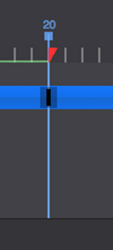
接下来，在属性面板中，展开高级属性菜单，在帧事件栏中输入帧事件的名字（可以重复，除非特殊需要，请不要重复）即可。
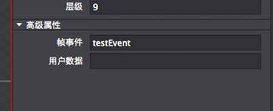
7.导出骨骼动画：点击屏幕左上角的使用上次设置发布图标，可以导出骨骼动画，默认是csb格式，可以通过点击边上的小箭头进行导出设置。
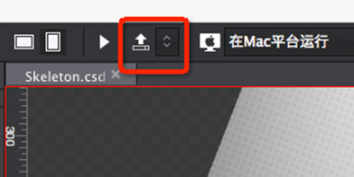
8.在Cocos编辑器的Layer或者Scene中加载编辑好的骨骼动画
新版骨骼动画在Cocos的加载方式比加载1.6版本的骨骼动画要方便一些，只需要从资源面板中直接拖入Layer或者Scene的画布上即可。（1.6版本的骨骼动画需要使用自定义控件加载）
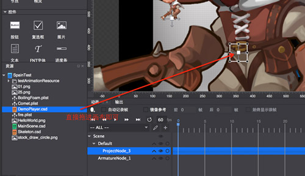
加载动画后，我们可以在属性面板中对骨骼动画进行一些设置，在特写栏目下，我们可以设置动画的播放。
嵌套动画的类型有三种
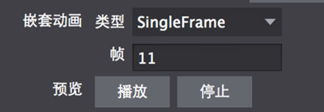
SingleFrame表示只显示一个静态的动画（也就是骨骼动画的某一帧，下边的帧就是设定显示的帧数）
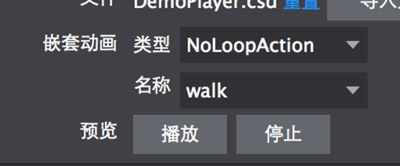
NoLoopAction与LoopAction的界面是一样的，这个用于设置播放的动画，下边名称指的是播放哪个动画。（NoLoopAction不循环播放，LoopAction循环播放）
9.最后，我们可以在Layer或者Scene的动画栏中，设置在某关键帧切换骨骼动画所播放的动画以及是否循环的状态：
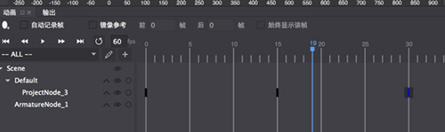
在程序中应用骨骼动画
Cocos编辑器导出的骨骼动画可以很方便的放到Cocos的项目中使用，首先将导出的骨骼动画和图片资源拷贝到项目的Resource目录下。
在Cocos项目中使用骨骼动画很简单(以C++为例)(注意：新版骨骼动画加载方式与1.6版本不同)
//首先通过CSLoader读入Cocos编辑器导出的csb文件，并将CSLoader返回的Node转换为SkeletonNode*类型
SkeletonNode* skeletonNode = static_cast(CSLoader::createNode("DemoPlayer.csb"));
//获得到骨骼节点之后，可以对骨骼节点的Scale、Position等进行设置
skeletonNode->setScale(0.2f);
skeletonNode->setPosition(150, 150);
//然后将骨骼节点添加到父节点上
this->addChild(skeletonNode);
//接下来，再次通过CSLoader读入Cocos编辑器导出的csb文件，创建一个ActionTimeline对象，这个对象存储着骨骼节点的所有动画
ActionTimeline* action = CSLoader::createTimeline("DemoPlayer.csb");
//我们为骨骼节点的动画设置一个tag值方便后边取出动画，建议这里使用枚举的形式来定义tag值（为了方便这里直接写100了）
action->setTag(100);
skeletonNode->runAction(action);
//播放action中的动画(参数1:动画名称 参数2:是否循环播放)
action->play("animation0", false);
//我们可以通过每个骨骼节点上边的某个皮肤(图片)的名字来获取这"块"骨骼
const std::string weapBoneName = "Layer20";
auto weaponHandeBone = skeletonNode->getBoneNode(weapBoneName);
//我们可以创建一个Sprite并把它加到刚刚获取到的那"块"骨骼的皮肤中
auto weapSkinToAdd = Sprite::create("ArcherPeng/girl_arms.png");
weapSkinToAdd->setName("Knife");
weapSkinToAdd->setPosition(Vec2(135, 23));
weapSkinToAdd->setScale(3.0f);
weapSkinToAdd->setRotation(86);
weaponHandeBone->addSkin(weapSkinToAdd, false);//加载到皮肤中
//然后将新加入的皮肤显示出来
weaponHandeBone->displaySkin(weapSkinToAdd, true);
//当然也可以换回原来的（"3"指的是"3.png"原先皮肤的名字）
weaponHandeBone->displaySkin("3", true);上边我们谈到骨骼动画支持帧事件，下边我们来看一下如何注册一个帧事件的监听
//通过我们之前设置的tag，从骨骼节点中把action取出来，然后给其设置一个事件监听函数
skeletonNode->getActionByTag(100)->setFrameEventCallFunc([](Frame* frame)
{
EventFrame* evnt = dynamic_cast(frame);//先对frame的类型进行转换
if(!evnt)
return;
std::string str = evnt->getEvent();//取得事件的名字
if (str == "testEvent")//根据事件名字进行相应处理
{
CCLOG("testEvent");
//TODO
}
}
)通过以上步骤，我们就可以灵活的使用Cocos的骨骼编辑器制作出非常流畅且节约资源的骨骼动画了。
对于1.6骨骼动画的兼容
对于之前1.6版本制作的骨骼动画，Cocos编辑器是可以直接导入的， 文件->导入->导入1.6版本项目，选择1.6的骨骼动画项目即可
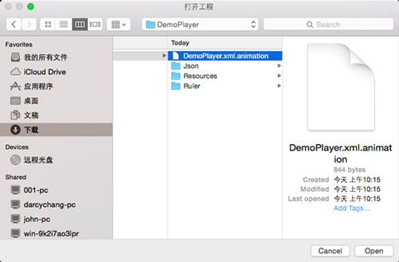